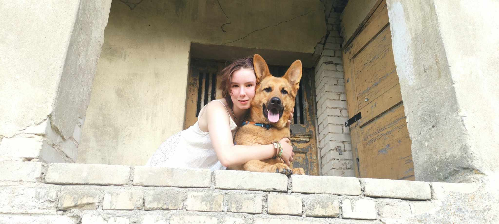
Gabi Kosma Januszkiewicz
Człowiek Orkiestra
Ścieżka artystyczna
Droga artysty jest pełna wyboi i niespodziewanych skrentów. Nie jest tak, że twórca rodzi się gotów do wykreowania swoich najlepszych dzieł. Oprócz talentu i predyspozycji potrzebna jest ciężka praca, której w przypadku ścieżki Kosmy zdecydowanie nie brakuje.
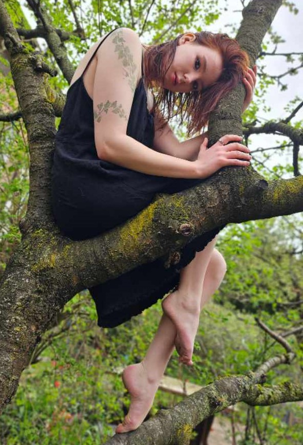
Wykrztałcenie
- Fortepian i skrzypce Ogólnokrztałcąca Szkoła Muzyczna I stopnia im. prof. Marka Jasińskiego w Szczecinie
- Rytmika z choreografią Zespół Państwowych Szkół Muzycznych im. Feliksa Nowiejskiego
- Warto wspomnieć, że wymogiem ukończenia szkoły muzycznej drugiego stopnia jest nie tylko zdanie matury, ale również obronienie dyplomu. Kosma poświęciła wiele czasu i sił na jego przygotowanie. Od doboru muzyki, przez stworzenie choreografii aż do prezentacji przed komisją. Pod tym linkiem można zobaczyć nagranie tej pracy.
- Scenografia i przestrzeń wizualna Akademia Sztuki w Szczecinie, Wydział Architektury Wnętrz i Scenografii
Działania na scenie
Kosma nie bez powodu wybrała studja na kierunku scenografia. Od dziecka była zaangażowana w Pracowni Tańca Etnicznego w Pałacu Młodzieży w Szczecinie. Zaznajomiła się tam z podstawami ruchu scenicznego i tworzenia scenografi. Gdy w 2022 roku dołączyła do amatorskiej grupy teatralnej działającej pod Teatrem Lalek Pleciuga, naprawdę rozwineła swoje aktorskie skrzydła. Z tą trupą wystawili w 2023 roku spektakl ,,Czas Wodnika", a w 2024 ,,Weselnicy". Na poczatku 2023 Kosmie udało sie przejść casting do grupy Act Out, z którą stworzyła i wystawiła przedstawienie ,,Dzieci i ryby głosu nie mają". Miała potem okazję prezentować je w wielu polskich miastach m.in w Poznaniu i Katowicach. To jednak nie wszystko. Od września 2023 Kosma została członkinią grupy Maszkaron, działającej w Pałacu Młodzieży w Szczecinie. Tam oprócz lokalnych przedsięwzięć w Pałacu, zagrała Bizancję w adaptacji ,,Bankietu" Gombrowicza.
Aktualnie ze wzgledu na skupienie swojej uwagi na studiach, Kosma nie działa w żadnej zorganizowanej trupie, jednak swój wolny czas dalej angażuje w teatr. Można ją spotkać na przykład na Zapleczu Teatralnym (wolontariacie Teatru Współczesnego w Szczecinie) lub oddolnie organizowanych performancach. Od niedawna pracuje również jako plastyk w Operze na Zamku.
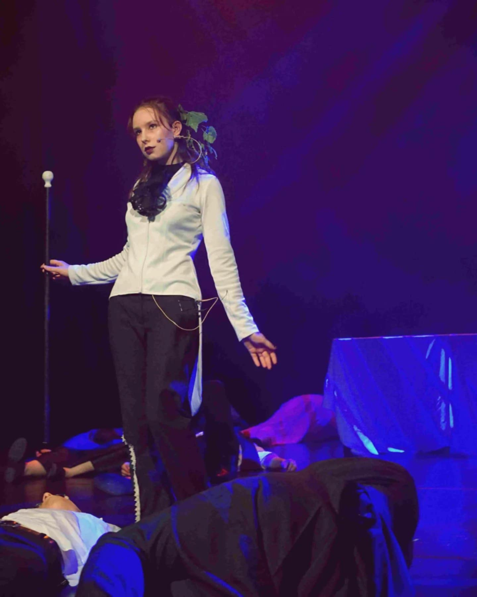
Weselnicy
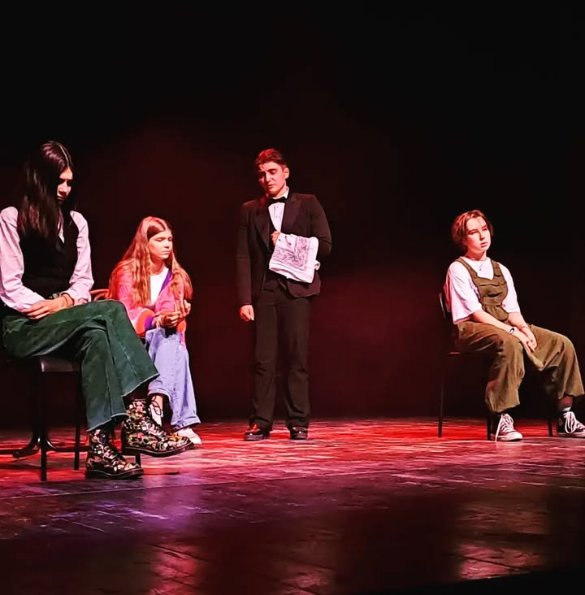
Dzieci i ryby głosu nie mają
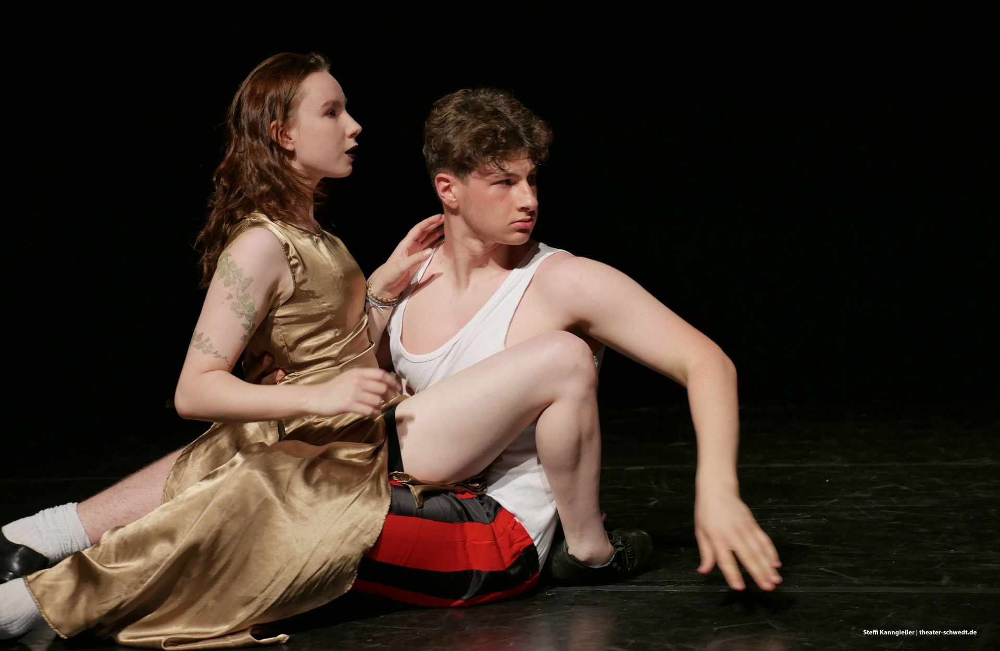
Bankiet
Portfolio
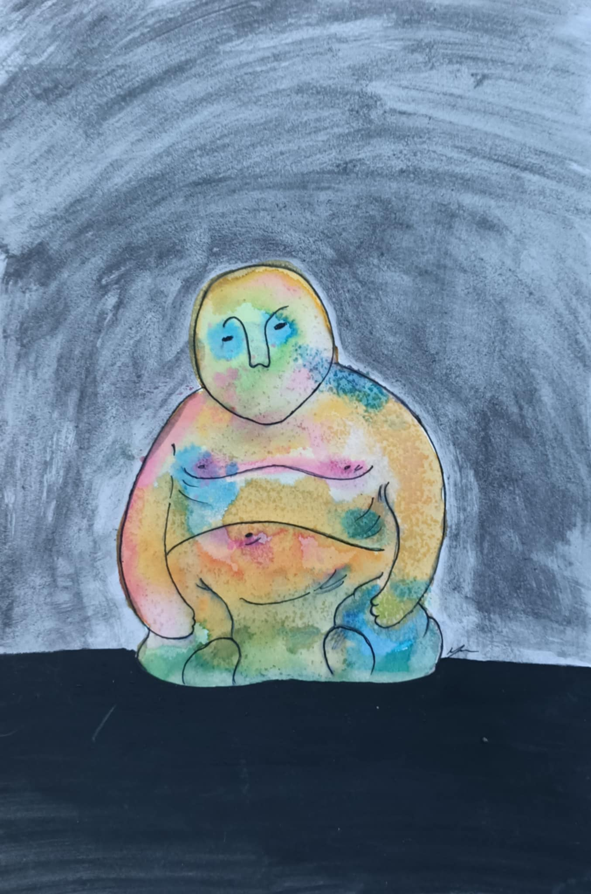
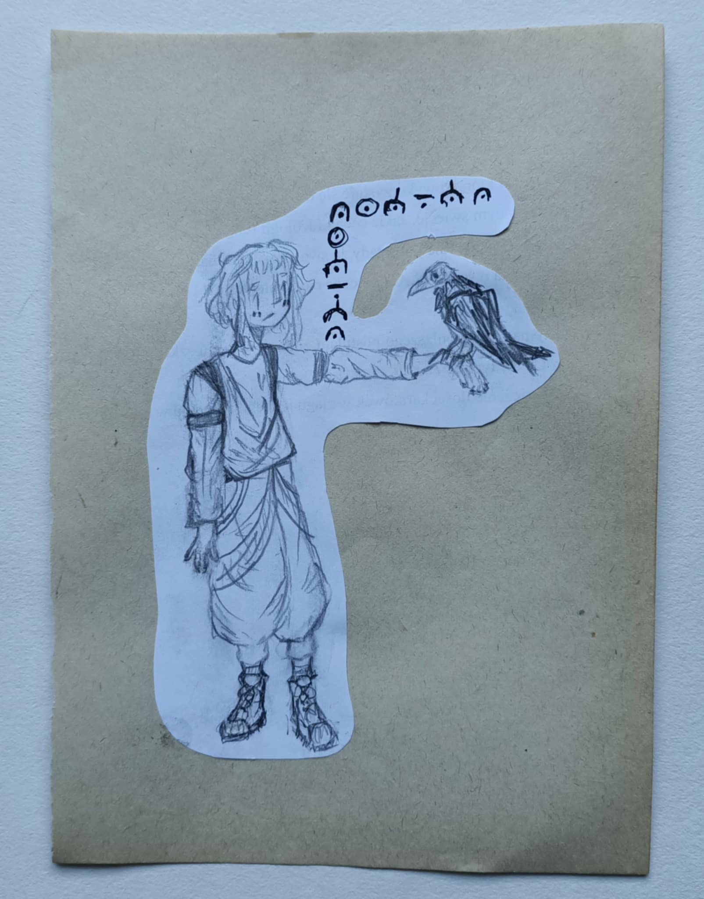
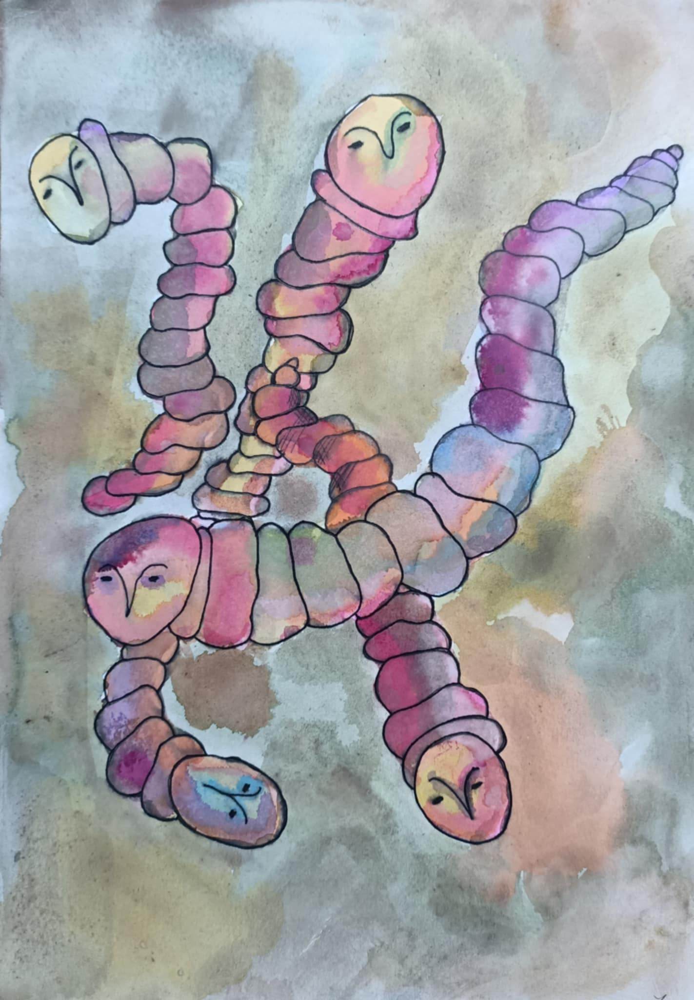
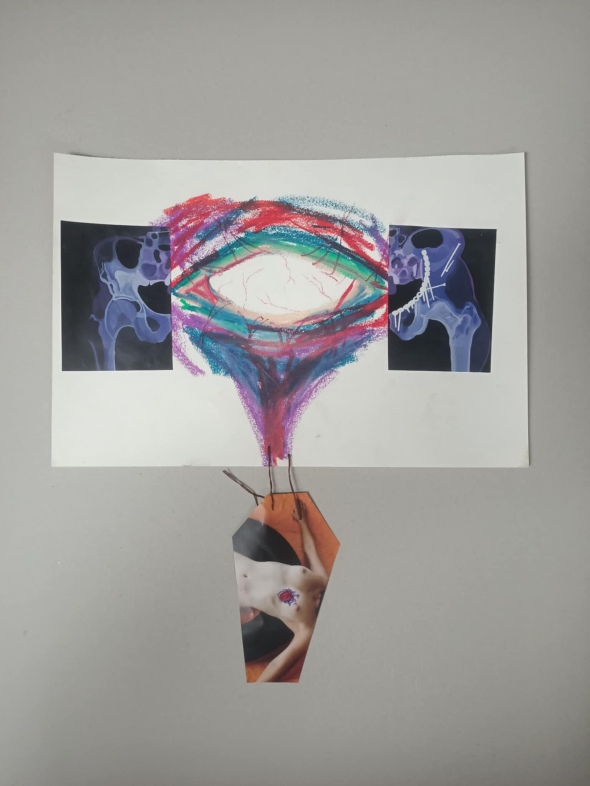
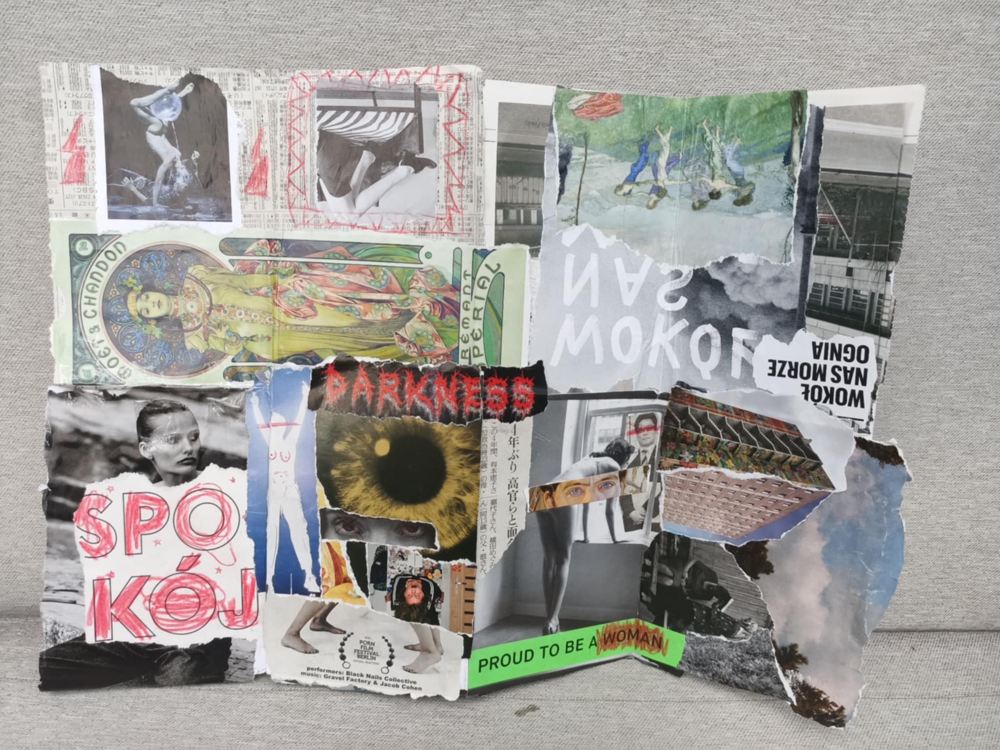
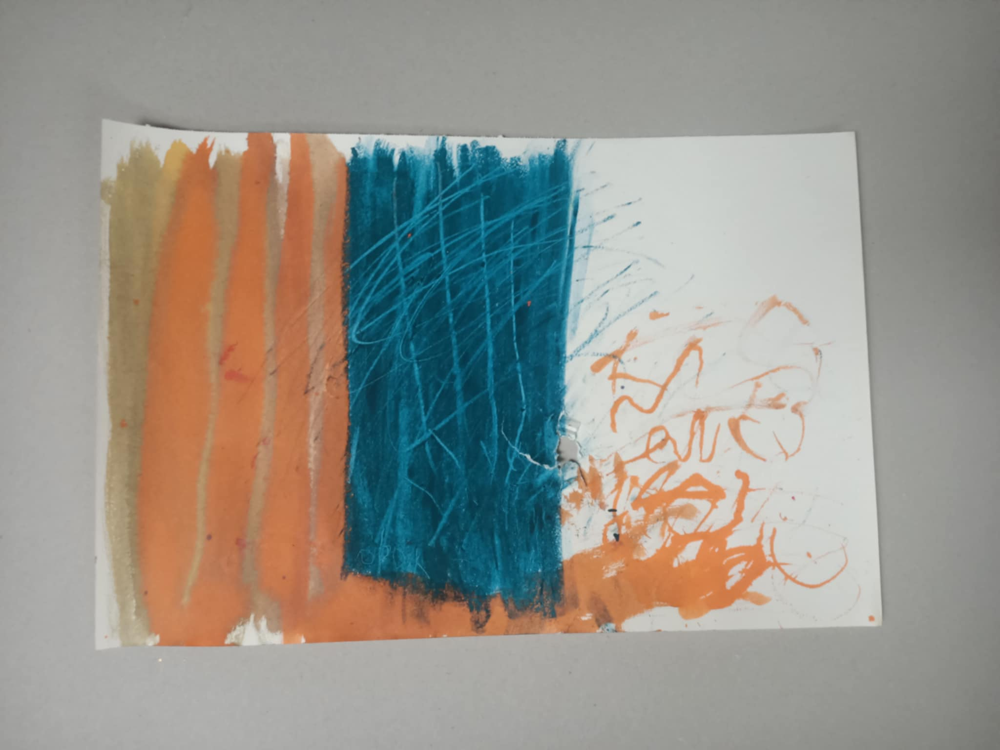
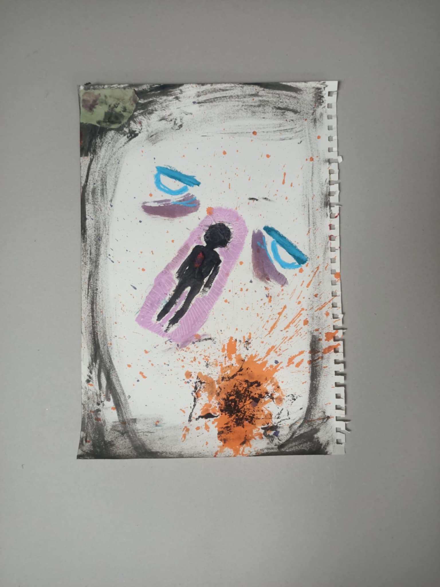
Kontakt
Jak możesz skontaktować się z Kosmą?
- gjanuszkiewicz13@gmail.com
- @j._reszka
- Tiktok
- @dagome